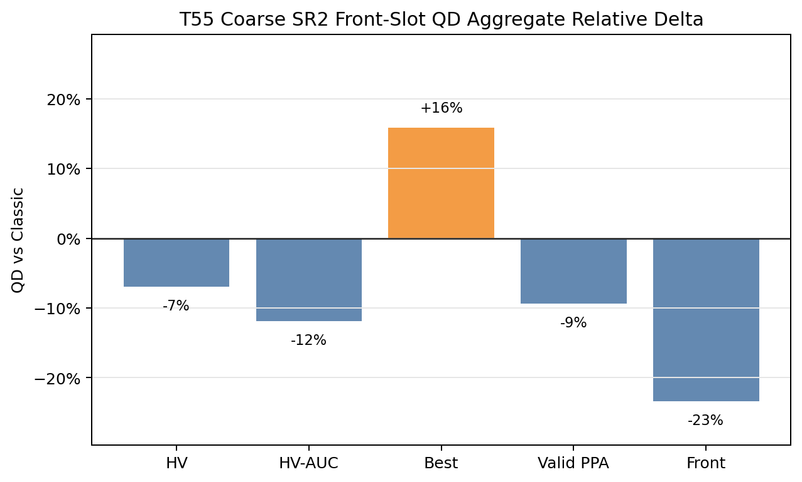
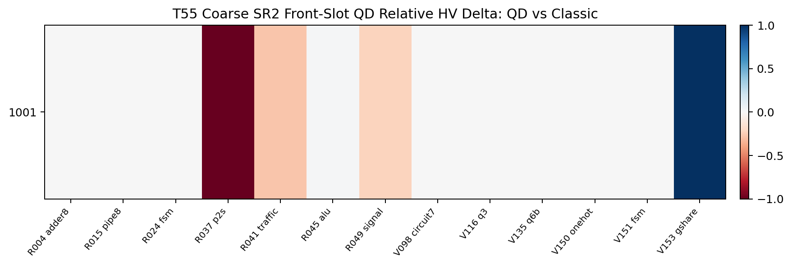
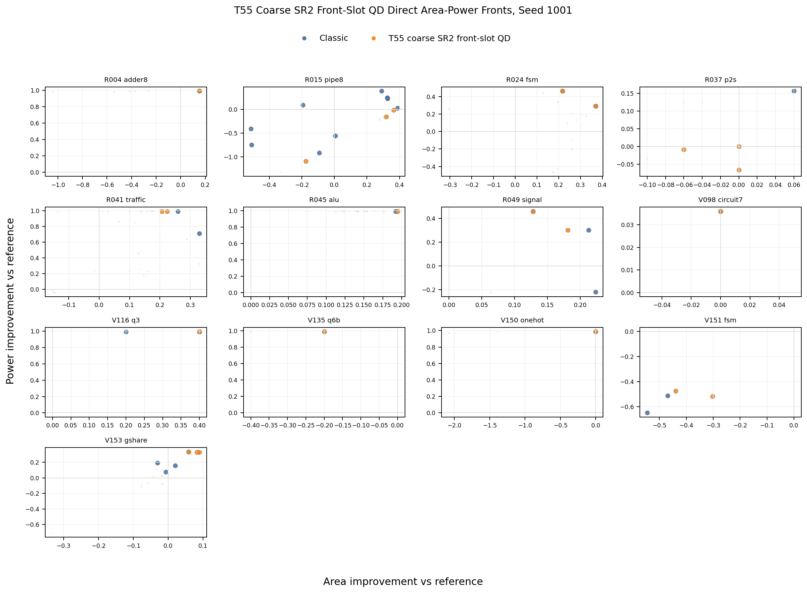
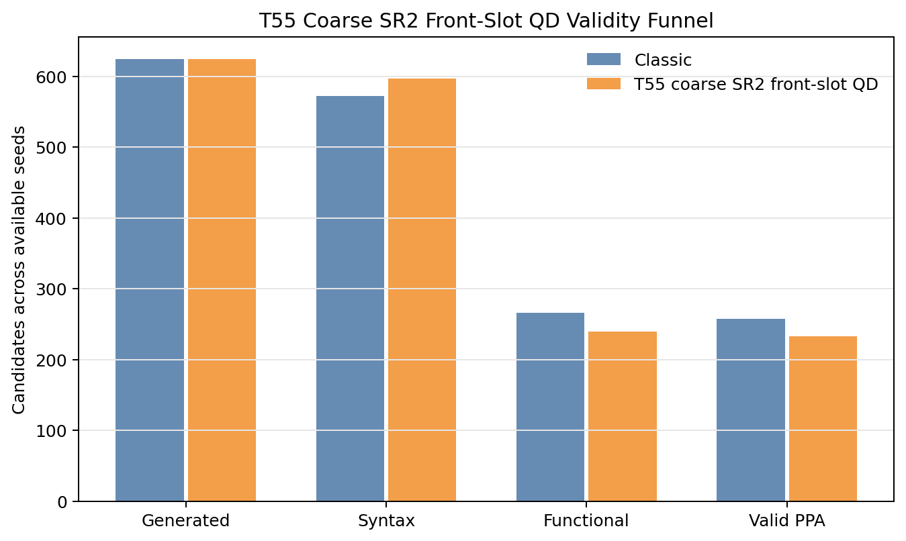
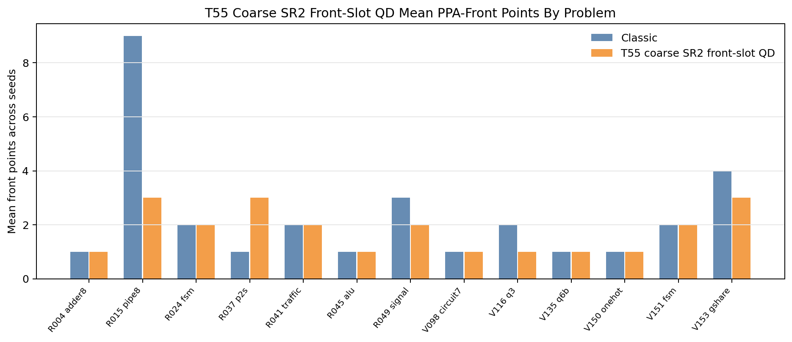
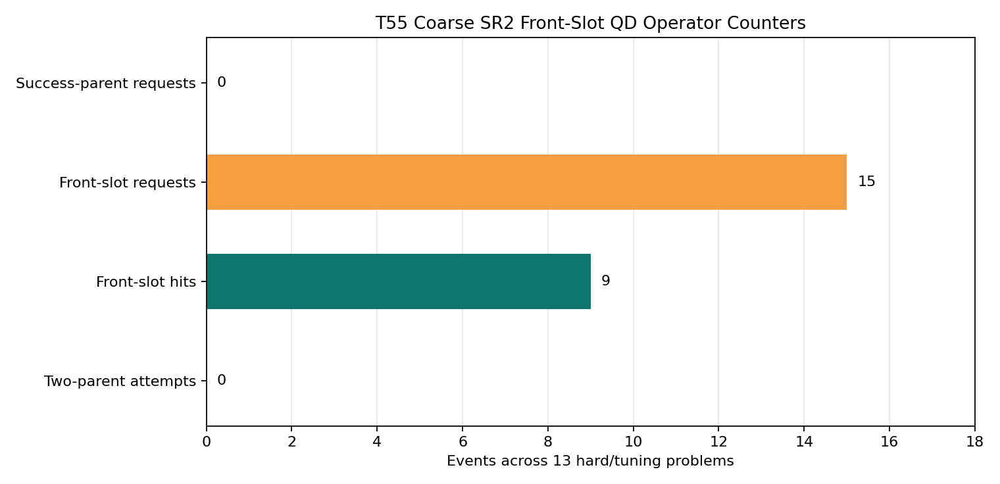

T55 Direct PPA Pareto Supplement
Static reader-facing figures for the completed 13-problem hard/tuning screen. T55 coarsens the SR-PCA archive to two axes and improves front-slot lane hits over T54, but it remains below classic on mean HV, HV-AUC, and raw PPA-front breadth.
-6.9%Mean HV
-11.8%Mean HV-AUC
+15.9%Mean best score
-24Valid PPA
-23.3%Front points
0Classic-covered losses
0Yield warnings
9Front-slot hits
Aggregate Direction

Paired HV Heatmap

Direct Area-Power Fronts

Validity, Front Coverage, And Lane Use


